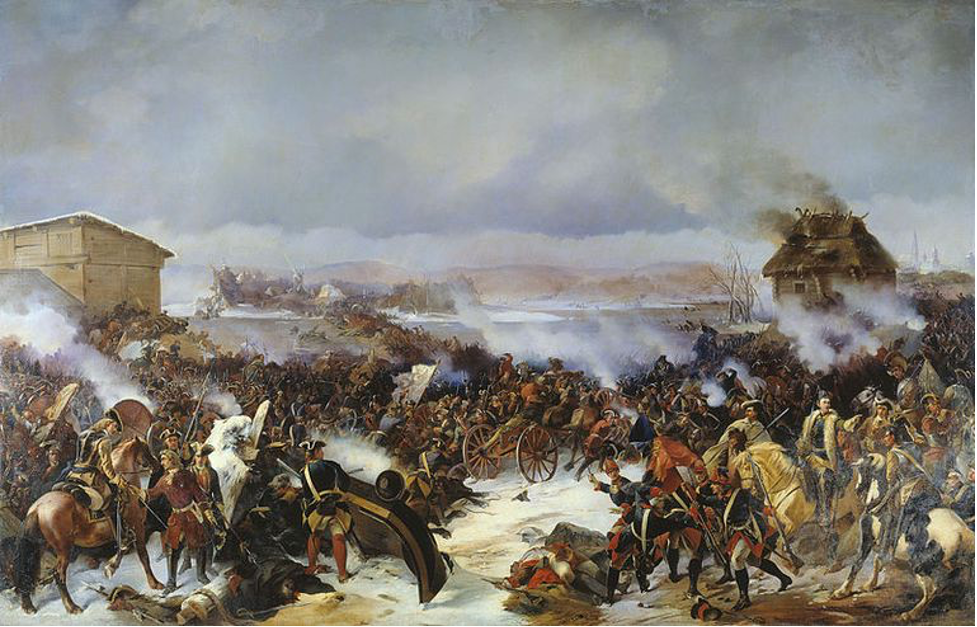
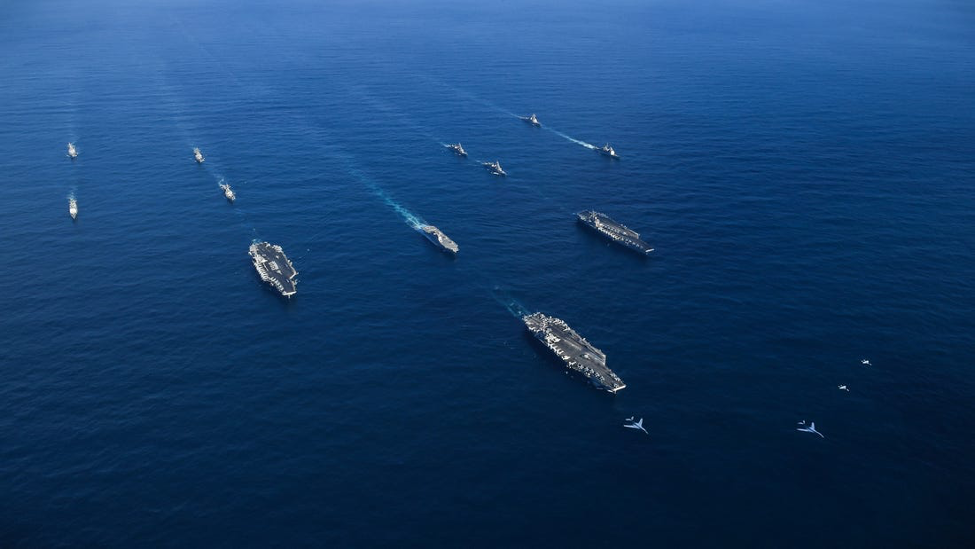
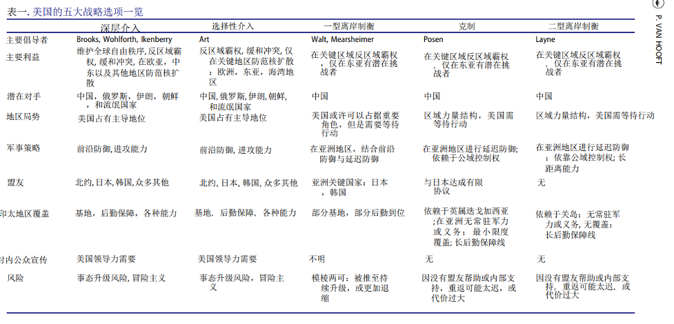

收录于合集

作品简介
【作者】 保罗·范·胡夫特（Paul van Hooft），麻省理工学院博士后研究员，海牙战略研究中心高级分析员。
【编译】 肖龙（国政学人编译员，佛罗里达大学政治科学系博士生）
【校对】 李源
【审核】 张曼娜
【排版】 毛雅欣
【美编 】游钜家
【来源】 Hooft, Paul van, “All-In or All-Out: Why Insularity Pushes and Pulls American Grand Strategy to Extremes,” Security Studies 29 (2020): 701-729.
【归档】 《国际关系前沿》2021年第1期，总第28期。
期刊简介
《安全研究（Security Studies）》收录出版创新性的学术稿件——无论是理论研究、实践经验分享还是两者兼而有之。安全研究包含广泛的议题，从核扩散、核威慑、军民关系、战略文化、种族冲突、流行病与国家安全、民主政治、外交决策到定性与多方法研究的发展。根据2019年的Journal Citation Reports显示，其2019年的影响因子为2.167，在95种国际关系类期刊中排名第21。
全进或全退：孤岛状态何以将美国大战略推拉至极端
All-In or All-Out: Why Insularity Pushes and Pulls American Grand Strategy to Extremes
Paul van Hooft
内容提要
反对美国的国际主义深度介入（deep engagement）大战略的人认为，美国应奉行紧缩政策以避免与其他主要大国发生冲突及盟友搭便车等问题。紧缩支持者相信，美国的孤岛地位可以为其提供内生的/天然的安全保障，并尽可能地推迟美国可能进行的国际介入。若是一个霸主大国在欧亚地区崛起，其控制海洋公地的企图则会使得美国再次进入到该地区。作者认为，此孤立主义战略能够在亚洲为美国带来成功的可能性不大，但是美国也不可能在持续深入介入的过程中避免与地区性大国的事态升级。因为美国的距离性和离岸性，其与盟友和对手之间的利益均衡将势必不对等。这导致了美国对外很难令盟友和对手相信其情愿付出生命和财力，也使得美国对内很难说服民众其付出的必要性。因此，对外参与、对内吹嘘便成了美国大战略的独有特质。作者随后分析了这种两极化的动态如何可以被运用于中美在西太平洋的竞争中。如果美国坚定希望在亚太地区维持均势，则必须做好承担灾难性后果的准备并将中国视为存在性威胁。由此，美国将面对两个截然不同的选择：升级事态或撤退。
文章导读
在过去的近七十年中，美国一直奉行 “深度介入 ”）的大战略，旨在避免其他大国在世界其他地区的主宰，尤其是东亚、欧洲、和波斯湾，平息这些地区内的冲突及防范该地区的核扩散，并通过支持自由市场、多边合作与推广价值观维持全球自由秩序。虽说贸易关系和共同价值观或利益均可以强化这种战略，但是美国的 “共有权控制力 ” （command of the commons）却是该大战略最坚强的后盾。共有权控制力是由美国的军事科技优势所支撑起来的，可以安抚盟友并震慑对手。然而，美国学术界和政策界早已从不同角度批评和反对该外交政策。
比如，巴里·波森（Barry Posen）、克里斯多弗·连恩（Christopher Layne）、以及约翰·米尔斯海默（John Mearsheimer）等人认为此种大战略主要有几点问题。一，介入政策有可能使美国触发与其他大国之间不必要的争端。二，介入政策会致使美国不成比例地承担更多为保护欧亚地区盟友所带来的代价和风险。三，介入政策会将美国带进旷日持久且代价高昂的泥潭困境，譬如伊拉克。因此，与介入论相对立的紧缩论（retrenchment）便诞生了。反介入政策的人认为，美国应该奉行紧缩政策，即大力削减甚至结束美国在亚洲的存在以避免事态升级，在有绝对必要时可以重返该地区。紧缩政策随着特朗普的上台已经获得了越来越多的关注。但是，作者认为，要想理解介入和紧缩之间的争辩，还需首先理解美国的孤岛状态及其为美国带来的天然安全地位。
01
孤岛状态与美国大战略
一个海洋大国的孤岛状态（insularity）源自其独特的地理位置。地理上，海洋国家（maritime state）与陆地强国的最大不同便在于它有海洋的隔绝和保护，且这种保护并不简单的指军事力量因为 “距离的障碍 （tyranny of distance） ”而减弱。作者认为，这种源自于地理距离的孤岛状态源自于地形和技术的共同作用。历史上，海洋起着 “大高速公路” 的功能，不仅承载着大量人员和物资的流动，也对军事实力的远距离投射至关重要。对于潜在的进攻者来说，大洋的存在可以起到阻挠和震慑的作用。因此，在一个海洋大国拥有充足的技术和资源来保护自己，并已经发展起了足够成熟的海洋军力时，它将拥有更多选择余地来决定何时何地行动。与海洋大国相比，陆地国家互相接壤，相互的纠葛更多，面对利益攸关的情况时，其选择余地将非常小。一个海洋大国可由此选择离岸平衡（offshore balancing）的策略，游离于冲突之外，只在地区权力失衡的情况下介入。历史上的许多海洋大国，诸如葡萄牙、荷兰共和国、大不列颠等都得以运用类似的战略并成为了与临近陆地强国相比极有竞争力的国家。
然而，一个海洋大国的孤岛状态也有各种弊端。第一，海洋大国通常对于其他大国威胁性较弱。历史上的拥有庞大国土的陆地强国，譬如俄国和1945年前的德国，都有一种永存的不安全感，会为了保证自己安全而时刻准备对外扩张制霸。陆地强国拥有内可保家卫国，外可纵深征服的陆军。而海洋大国引以为傲的海军则较难达到对外纵深征服其他大国的目的。的确，诸如英美这样的海洋大国虽然经常将自己的意志强加给实力较弱或边缘（peripheral）地区的国家，譬如19世纪末到20世纪初的拉美、加勒比海、南太平洋国家，但是因为海洋隔绝带来的远距离和孤立性，其对可以自卫的陆地强国威胁不大。

大北方战争中的沙俄和瑞典陆军
第二，海洋大国在大陆地区的攸关利益（interest at stake）有限，订立和信守安全承诺的难度增加。海洋隔绝所带来的安全红利意味着海洋大国在三个方面将面临着困难：威慑或胁迫对手、安抚盟友、以及对内制造威胁认知。敌对国和同盟国在考量一个大国的安全承诺时，通常会选择观察它过去行为所带来的名声以及该大国的实力和在该地区的攸关利益。根据定义，一个可以自主选择何时何地介入的国家势必比其他国家拥有更少的攸关利益，其在安全承诺上的可信度自然也更低。另外，海洋大国在做出可信的威慑或安抚姿态之前，也需要获得国家内部的支持。国土安全的威胁一般是最能够激发国内民众渴望加强国防投入的议题，因此政府需要有效地在内部制造威胁认知。威胁越直接，安全承诺的投资越容易被正当化。但是，一个被海洋隔绝的大国与陆地强国相比，更难感受到侵略的威胁，因此这种认知将很难制造。所以，作者认为，海洋大国赖以成功的优势同时也是其劣势。
这种孤岛状态非常适合用来解读美国的大战略。就算是在海洋大国中，美国的安全地位都是屈指可数的。美国位于大西洋和太平洋之间，资源充沛，技术发达，且邻国中没有任何足以对其造成威胁的强国。其他的成功海洋国家诸如荷兰和葡萄牙都有容易被侵略的陆地边界，英国也与其传统对手仅一条海峡之隔。相比之下，美国已经是西半球地区的霸主、北美地区的陆地强国，有丰富的必需资源储备，且自从南北战争结束以来几乎未损失过领土。因为其孤岛性、远距离、较少攸关利益，美国可以自主选择在不对本土造成风险的情况下，在他国领土上诉诸武力。
为了弥补自己的孤岛状态所带来的弊端，美国则选择了深度介入的大战略来加强自己在其他地区的攸关利益。斯蒂芬·沃尔特（Stephen Walt）指出，美国需要 “压倒性的进攻能力” 来补足其远距离带来的弊端。这样，美国可更具威胁性，从而更好地威慑对手和安抚盟友。美国也需要在不同地区拥有实体存在来增加自己在该地区的攸关利益和政治砝码。同时，波森认为，“美国人民不会自然而然地相信远在天边的问题跟他们有任何关系”。因此，美国领导人历来就需要向选民提供诉诸武力的正当原因，多是以国家安全受到威胁和国际领导力持续下降做文章，夸大美国的脆弱性和国际形势的危险性。在这样的条件下，对外参与介入、对内夸大威胁便成了美国大战略的独有特质。
02
**
**
美国在西太平洋
美国的孤岛状态在西太平洋得到了比较好的展现。从美国本土到东亚的距离限制了美国进入或重返该地区的能力。大多数水面舰艇从美国西海岸跟夏威夷到西太平洋的运输时间需要以星期计算，而虽然核动力航母可以在海上持续巡航，但是负责保护的支援舰仍然需要补充燃油和弹药。同样的，空中力量也需要巨量的地面和海面支持，以提供人员、零件、燃油等。为了克服这种困难，美国控制夏威夷和关岛，还有其他的亚太盟友为其提供额外的领地用作空港、船坞、运兵站。美国在日本和韩国都驻有大量的美国军队，另有菲律宾、澳大利亚、新加坡、英属迭戈加西亚（Diego Garcia）等地提供军事援助。
美国在西太平洋地区设立了两条岛链，企图借此在战略上卡住中国。然而，中国在反介入和区域阻绝（Anti-access and area- denial；A2/AD）技术上的投入是对美国军事优势的一个直接回应，且取得了很好的效果。中国已经可以对美国的固定目标和水面舰艇进行瞄准，在南海和马六甲海峡附近的美海空军基地也在中国人民解放军火箭军的射程之内。美国政策界和学术界关于中国的反介入能力是否可以真正挑战美国霸权，说法不一。然而，可以确定的一点是，如无意外情况发生，美国将比中国更加关心冲突所带来的代价。作者认为，美国在西太平洋的利益是非固有，外在的。而中国则在该地区有着固有利益。美国的军事优势正在被中国的反介入能力逐渐削弱，因而美国在西太平洋展示军事实力或者挑起冲突的代价也在提高。在这样的情况下，美国需要投入更多资源才可以保持自己在西太平洋的安全地位，并安抚地区盟友。同时，其也需要在国内大力推销国际责任和国家安全，从而说服国内民众。

美国向亚太地区增派航母
来源：Business Insider
03
美国的五项可选大战略
作者随后归纳总结并对比了美国学者为美国大战略谋划的五个选项。详见下图
表一. 美国战略选项

来源：译者从原文摘译
这五大选项之中，覆盖范围最广的就是约翰·伊肯伯里（John Ikenberry）等人支持的深度介入战略。该战略旨在防范区域性霸主崛起，并在欧洲、亚洲、中东地区通过结盟和前沿防御来缓和冲突。选择性介入（selective engagement）则严格聚焦于安全利益上，是一个 “介于做太多和做太少之间的中间地带”。在选择性介入的指导下，美国需要在欧洲、波斯湾、亚洲等地区维护关键同盟关系以及前沿基地。两种介入政策并没有本质上的区别，且都可以令美国在亚太地区犯下冒险主义错误。
结合之前章节所提到的中美在西太平洋的竞争，以上两种美国介入战略均认为，胜利的关键就在于中国是否能够在美国的军需和燃料进入短缺或者出现高伤亡率之前屈服于美国的强大军力。为了能够对中国的反介入能力做出回应，美国则必须加大投入。介入战略因此会陷入一种三步逻辑循环：为了能够威慑中国，美国必须在印太地区追求共有权控制力；为了促进该控制力，美国需要区域盟友及合作伙伴给予适时进入该地区的接入点；为了安抚盟友并保证不会在安全代价上升之时抛弃对方，美国则继续追求控制力。正如2012年的联合作战接入概念（Joint Operational Access Concept）所说：“作为一个拥有全球利益的世界性大国，美国必须保持在世界上任何地区显示军事实力的可信能力，以支持其利益……此外，能够可信地做到这一点既可以消除盟友的疑虑，也是对任何企图损害美国利益的一方强有力的威慑。”
在另外三个选项之中，沃尔特和米尔斯海默提出的离岸制衡（一型）（offshore balancing I）、波森支持的克制政策（restraint）以及连恩倡导的离岸制衡（二型）都认为欧洲和波斯湾的主要国家可以自相制衡，防止一国在该区域独大。这三种理论的最大分歧点就在于日本、印度等国在亚洲能否做到这一点。作者认为，克制政策和二型离岸制衡基本上没有区别，但是一型离岸制衡却包含了介入政策的许多特征。一型离岸制衡认为美国应该在东亚持续介入，军事覆盖应以海空两军基地为主，并保持在亚洲的安全同盟。而波森与连恩两人基本上认为美国应该全面撤出亚洲。
在这三项紧缩战略中，美国的重返或再进入能力是关键。紧缩派认为，美国得以后撤的关键在于能否可以 “可信地展示自己仍然拥有随时重返欧亚大陆的能力，并可以届时组织同盟对抗扩张主义国家”。因此，与其称其为“紧缩战略”，不如称其为“延迟防御” 战略（delayed defense）。紧缩战略的倡导者均认为，美国应该 “只有在绝对必要时才介入”，并将第一防线 “禅让” 给地区内的其他大国，因为“它们更加希望避免某一国在该地区拥有控制地位”。然而，事情并非如此简单。作者在接下来的章节中提出了五点可能出现的问题和障碍。
04
紧缩战略的五大难点
第一，从西太平洋的盟友领地撤军将加重美国在太平洋的资产过于集中的问题。 若是仅依靠关岛，美国在西太平洋的有效制空能力将受到极大的限制。比如，中国现有的H-6 轰炸机（即轰-6）已经可以向关岛发射长距离亚音速巡航导弹（long- range subsonic cruise missile），更长距离的弹道导弹也可以瞄准并压制关岛的防空导弹系统。因紧缩战略而被迫聚集于关岛的战斗机和运油船将成为主要目标，而对该地的防御将会因为失去在日本及菲律宾的接入点而异常困难。
第二，美国重返西太平洋的行动将会耗费极大的财力、后勤需求、时间，并且非常危险。 放弃第一至第二岛链将限制美国在太平洋的行动能力，并增强中国的行动能力。美国若与中国正面冲突，其将面临孤岛状态下的巨大挑战，即海洋带来的距离障碍，后勤保障将受到很大威胁。以空军为例，在亚太地区重新植入制空力量需要转移大量地勤保障人员，且在没有现成军用机场和燃油储备的情况下，美军空中力量将受到极大限制。
第三， 美国重返西太平洋将会遭遇重重政治困难。 波森认为，美国对于盟友的需求仅限于其在亚太地区提供的基地。然而，如果美国单方面终止现有安全纽带并移除军力之后，其盟友和伙伴可能会不愿意继续提供基地和其他帮助。美国盟友已然十分担心甚至惧怕潜在的事态升级会为它们带来巨大的经济和军事损失，而美国的再进入势必会为区域状况增加进一步不稳定性。当美国再进入时，对于更容易受到攻击的美国盟友们来说，不提供任何帮助的“靠边站” 或许是保全自身的上策。因此，若是想要保持其在亚太地区的再进入能力，美国就必须持续兑现其安全承诺，并最终落入到与深度介入和选择性介入相似的逻辑循环之中。不然，美国只能像波森与连恩认为得那样，从亚太地区继续脱离。
第四，紧缩政策对于如何界定需要重返的情境模糊不清，美国政客将很难求得国内民众和他国的支持。 紧缩论既没有明确地指出地区权力结构失衡的基准在哪里，也没有说明如何判定某事件发展是否需要美国重返甚至派遣军队。其次，美国的孤岛性质也使得美国民众很难承认某个事态的严重性，并同意并支持美国政府的派兵举措。
第五，在完全或部分脱离亚太地区后，美国需要保持其在世界范围内的海空霸主的地位以保留重返的能力。 美国民众是否愿意为保持亚洲长期权力均衡而承担这样的开支？既然已经脱离亚太地区，那么美国政府就自然很难在内部继续渲染夸大敌人威胁论。美国国内对于持续国防投入已然十分不情愿。在紧缩政策下，对于国防投入的热情可能会继续下降，进一步阻碍美国获取重返能力。
译者评述
本文详细阐述了美国的亚太战略一直以来都被迫面对的一个问题：孤岛状态所带来的两极化问题。这种状态的对于一个国家的意义超乎其地理位置，应该从政治角度去理解。如果美国想要阻止一个带有敌意的区域大国在欧亚崛起，其大战略会不可避免地将推向两个极端：事态升级或撤退。美国与亚太地区之间的较远距离与较少攸关利益加大了其安抚盟友和说服民众的难度。为了持续介入或者保持重返能力，美国必须在海外加大对于安全承诺的投入，并在内部继续渲染和夸大外界威胁。这样的持续介入举措可能使得美国被卷入冲突的风险增加，也是紧缩主义者对两种介入政策的主要批评点。比如，以巴里·波森为代表人物的美国克制政策就评价介入政策为“浪费资源，增强一些国家和人民的敌意，并使另一些国家幼儿化”，他主张美国应该大力削减在西太平洋的驻军以节省开支并逐步脱离与盟友的安全关系，从而促使地区国家自己承担起安全责任。【1】可是，作者指出，紧缩主义者在大肆批评介入政策的错误的同时，也大大低估了美国重返西太平洋的难度和代价。
本文的一个学术价值就在于其汇总了一些显要学者关于美国大战略的政策处方。的确，美国外交政策中的国际主义者和孤立主义者之间的争论由来已久。国际主义论一直是以所谓的威尔逊主义者（Wilsonian）和汉密尔顿主义者（Hamiltonian）为主，认为美国应该担起世界大国的责任，从军事、经济、以及价值观三个方面建立起一套国际自由秩序。而孤立主义则是以杰斐逊主义者（Jeffersonian）为代表，认为美国应该削减其对外参与从而降低外交政策上的风险。随着特朗普的当选，孤立主义里的另一股势力杰克逊主义者（Jacksonian）则获得了空前的抬头机会。与其他孤立主义者不同的是，其以“美国至上” 的民粹主义为基础，宣扬美国例外论，对传统的外交精英有着极深的不信任感，很容易扰乱美国的外交政策制定乃至其自由秩序的维护。【2】
特朗普当选与杰克逊主义
来源：New York Magazine
作者在文中还提到了美国政客为了获得民众支持，会大肆渲染外在威胁以提升介入的正当性。历史上，越南战争前期的约翰逊总统利用民众对于所谓的共产主义“多米诺效应” 的恐惧来增加驻越美军的数量。小布什也利用了恐怖主义和大规模杀伤性武器的威胁以获取民众对侵略伊拉克的支持。对于中美关系而言，美国是否会为了保证其介入或重返能力而对民众宣传中国威胁论，甚至将中国描述为存在性威胁？目前为止，虽然许多美国民众都将中国视为美国在经济上的竞争对手，但并非会同意将中国视为头号军事威胁。因此，美国政府在未来与民众的沟通中关于中国的描述或许可以为其亚太战略布局带来部分预测性效果。在这一方面，中国应该持续关注美国官方、媒体、以及政策界人士对于中美关系以及亚太局势的论调。
参考文献
[1] Barry Posen. (2013). Pull Back: The Case for a Less Activist Foreign Policy. Foreign Affairs , (January/February)
[2] Walter Russell Mead. (2017). The Jacksonian Revolt. Foreign Affairs 96 (March 2017)
词汇整理
【1】深度介入 Deep engagement
【2】共有权控制力Command of the commons
【3】紧缩政策 Retrenchment
【4】孤岛状态、孤立状态 Insularity
【5】海洋国家 Maritime state
【6】距离的障碍 Tyranny of distance
【7】离岸制衡 Offshore balancing
【8】攸关利益 Interest at stake
【9】A2/AD: 反介入和区域阻绝 Anti-access and area-denial
【10】选择性介入 Selective engagement
【11】联合作战介入概念 Joint Operational Access Concept
【12】克制政策 Restraint
【13】延迟防御 Delayed defense
文章观点不代表本平台观点，本平台评译分享的文章均出于专业学习之用, 不以任何盈利为目的，内容主要呈现对原文的介绍，原文内容请通过各高校购买的数据库自行下载。

国政学人
支持学术公益与知识传播
微信扫一扫赞赏作者 __赞赏
已喜欢，对作者说句悄悄话
取消 __
发送给作者
发送
最多40字，当前共字
上一页 1/3 下一页
长按二维码向我转账
支持学术公益与知识传播
受苹果公司新规定影响，微信 iOS 版的赞赏功能被关闭，可通过二维码转账支持公众号。